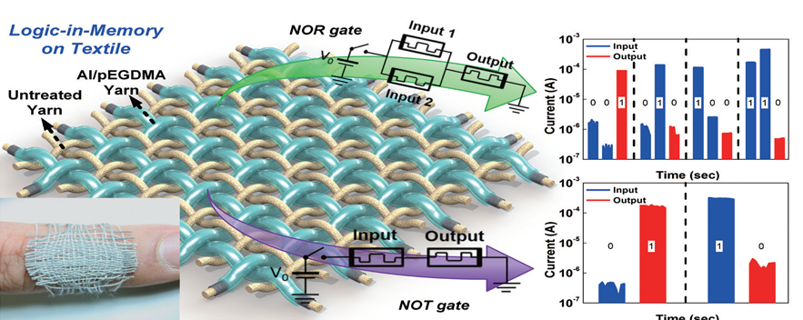

주제별 연구성과
주제별 연구성과
KAIST RESEARCH ACHIEVEMENTS
멤리스터 기반의 섬유형 웨어러블
전자소자 및 회로 기술
전기및전자공학부 최양규, 최성율
요약
섬유 기반의 점자 섬유 (e-textile)는 컴퓨터 및 전자소자 응용분야에 편리성을 제공할 수 있는 웨어러블 전자소자 시스템의 기본적인 구성요소이다. 그러나, e-textile 기술은 현재 상당한 기술적 어려움에 직면해있다. 이러한 기술적 제한 요소는 물질 자체의 고유한 특성에서 기인하는 공정의 어려움, 기계적-화학적 안정성 및 전력소비 문제 등을 포함한다. 본 연구에서는 이러한 문제점을 해결하기 위하여, 실제 섬유를 이용하여 멤리스터 기반 기능성 회로를 세계최초로 개발하였다. 앞서 진행한 연구와 같이 실위에 전극으로 사용될 알루미늄을 증착하고, 그 위에 임성갑 교수 도움으로 pEGDMA물질을 iCVD를 이용하여 증착하였다. pEGDMA의 전기적 특성은 선행 연구에서 이미 검증하였으며, 코팅된 실을 격자로 구성하였다. iCVD 증착법은 매우 균일한 막을 나노급으로 상온에서 증착할 수 있는 향상된 기술이다. 이렇게 코팅된 실이 격자로 구성되면 각 교차점은 ‘금속-절연막- 금속’ 형태의 memristor용 RRAM 소자가 된다. 이런 교차 배열 형태의 멤리스터 소자 (pEGDMA-textile memristor: ETM)는 직조방식으로 제작할 수 있는 특징이 있다. 이러한 섬유기반의 멤리스터 소자를 기반으로 NOT, NOR, OR, AND, NAND 및 Half Adder와 같은 논리 회로를 세계 최초로 개발하였다. 또한, 궁극적인 웨어러블 전자소자 구현을 위해 세탁 시에도 기계적, 화학적으로 내구성이 매우 강한 것을 실험적으로 검증하였다. 또한, 저전압 동작이 가능하며, 비휘발성 멤리스터 소자를 이용하여 전력공급이 없을 때에 저장된 정보를 유지할 수 있어 대기전력 (static power) 소모가 0 W에 가깝기 때문에 전력 효율면에서도 매우 우수한 회로임을 입증하였다.
연구배경
섬유는 인류사회에서 오랜 시간동안 사용해온 가장 보편적인 휴먼 인터페이스로써 섬유형 소재는 유연하고 넓은 표면에 적용할 수 있는 장점이 있다. 이러한 섬유기반의 소재는 능동형 전자 섬유 소재 및 전자 소자 기술이 더해져 효율적이고 친인간적인 전자섬유로 발전하고 있다. 더불어, 궁극적인 의류형 전자소자의 개발을 위해 섬유 자체를 전자소자로 제작하는 것은 필수적이다.
1990년대 후반부터는 입고 사용할 수 있는 컴퓨터나 단말기들이 개발되었다. 그러나, 이러한 하드웨어들은 의류에 장치들을 추가로 부착하여 각 모듈이 그 기능을 수행하도록 제작되었다. 반면에 최근에는 딱딱한 형태의 하드웨어를 의복과 같이 휠 수 있는 인간친화적이고 가벼운 전자소자들로 대체하려는 연구들이 섬유를 기반으로 빠르게 발전하고 있다. 전력 발생기, 휴대용 배터리, 질병 진단이 가능한 센서, 유기발광 디스플레이 등을 섬유 위에 제작됨으로써 스마트 섬유 시대로의 발전이 가속화하고 있다. 그 중 전자소자 분야에서는 트랜지스터, 논리 회로 등을 섬유에 제작한 연구도 진행되었다. 그러나 여전히 의류와 같이 대면적의 직물 형태의 섬유를 기반으로 추가적인 하드웨어의 부착없이 로직 컴퓨팅을 위한 디지털 전자 회로를 구현한 연구는 아직 보고되지 않았다. 앞으로 이상적인 신체 의류형 전자소자는 간단한 구조, 작은 부피, 가벼운 무게, 우수한 구부림 특성을 갖추어야 하며, 특히, 외부환경에서 사용할 수 있도록 소자 열화를 방지할 수 있어야 한다. 그러나 기존의 전자 섬유 기술들에서는 기존 silicon기반의 메모리 소자와 같이 단단한 wafer를 사용하고, 여러 단계의 복잡한 공정과정을 거치므로 의류형 단말을 제작하기 어려웠으며, 의류에 추가적으로 이종 형태의 부착이 대부분이었다.

연구내용
연구에서는 실제 의류를 제작하는 데 사용되는 면 섬유를 기판으로 사용하여 대면적 직물형 메모리 소자 및 로직 컴퓨팅 회로를 세계최초로 구현하였다. 먼저, 섬유 위에 액상 금속인 알루미늄을 코팅하고, 개시제를 이용한 화학 기상 증착 고분자 박막증착법으로 절연막을 형성하였다. 금속과 절연막은 수십나노의 두께로 얇게 증착하여 높은 유연성을 갖는다. 이렇게 코팅된 섬유를 격자 형태로 구성하여 ‘금속-절연막-금속’ 형태를 만들어 2단자 멜리스터용 저항변화 메모리(resistive random access memory, RRAM)를 제작 하였다. 최근에는 메모리 소자의 미세화가 한계에 이름에 따라 기존 3단자 트랜지스터 구조의 메모리를 대체하여 2단자 기반의 고집적도, 낮은 제작 비용, 간단한 제작 공정, 우수한 휘어짐 특성을 갖는 RRAM 및 멜리스터 연구가 활발히 이루어지고 있다. 코팅된 실의 교차점이 하나의 메모리 cell을 이후게 되고, 아무 처리하지 않은 섬유를 각 격자 사이에 삽입함으로써 각 메모리 cell을 격리하여 모든 cell이 전기적으로 단락되는 것을 방지하였다. 또한, 이러한 구조를 이용하여 단일 메모리 소자 뿐만 아니라, 직물형 로직 회로를 세계최초로 구현하였다. 본 연구에 적용된 RRAM은 멤리스터 회로 구현의 최적화된 소자로써 개별 소자를 조합하여 로직 회로를 구동할 수 있다. 2개에서 많게는 6개의 멤리스터를 조합하여 NOR, NOT, AND, OR, NAND, Half Adder 등을 구현하였으며, 다양한 조합으로 더 많은 로직 회로를 구성하는 것이 가능하다.
기대효과
- 이러한 멤리스터 소자 기반의 로직 회로는 기본적으로 비휘발성 메모리 특성을 갖기 때문에 한 번 저장된 데이터가 오랜시간동안 지워지지 않고 유지된다. 따라서, 웨어러블 전자 기기의 배터리 소모를 최소화하기 위하여 기존 폰노이만 컴퓨팅 방식의 한계를 극복함과 동시에 대기전력 (static power)소모를 0 W에 가깝게 하여, 저전력 웨어러블 소자로써 응용가치가 매우 클 것으로 기대된다.
연구성과
[논문] H. Bae†, B. C. Jang†, H. Park, S.-H. Jung, H. M. Lee, J.-Y. Park, S.-B. Jeon, G. Son, I.-W. Tcho, K. Yu, S. G. Im, S.-Y. Choi*, and Y.-K. Choi*, “Functional Circuitry on Commercial Fabric via Textile-Compatible Nanoscale Film Coating Process for Fibertronics,” Nano Letters, 17, 6443-6452 (2017)
[국제학회] H. Bae, W.-G. Kim, H. Park, S.-B. Jeon, S.-H. Jung, H. M. Lee, M-S. Kim, I.-W. Tcho, B. C. Jang, H. Im, S.-Y. Choi, S. G. Im, and Y.-K. Choi*, “Energy-Efficient All Fiber-based Local Body Heat Mapping Circuitry Combining Thermistor and Memristor for Wearable Healthcare Device,” International Electron Devices Meeting, San Francisco, CA, USA, Dec. 4-6 (2017)
[특허] 최양규, 배학열, 김대원, 김문석, “Wearable memory with textile substrate and manufacturing method thereof,” 출원번호: 10-2015-0144144, Korea